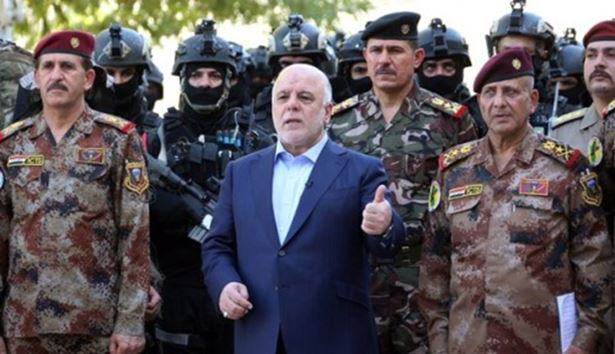
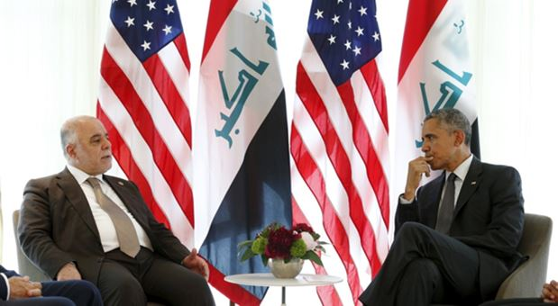
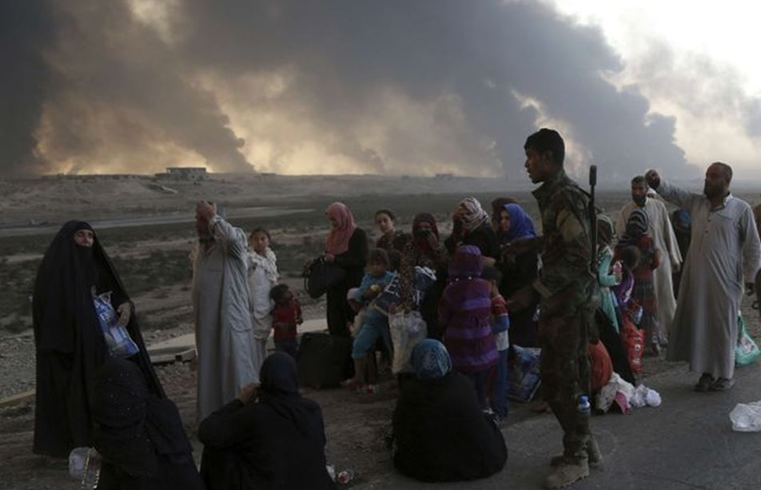

Alors que la préparation de la bataille de Mossoul retenait l’attention de tous les observateurs, le Président Erdogan est intervenu avec violence, début octobre, dans les affaires intérieures de l’Irak, ouvrant une crise régionale et complexifiant davantage la délicate préparation de l’offensive sur Mossoul.
Alors que de profondes divergences de vues subsistaient entre Washington et Bagdad concernant l’emploi des milices shiites pour la libération de Mossoul, le Président Erdogan vient de commettre une ingérence sans précédent dans les affaires intérieures de l’Irak. Cette action complexifie encore plus le contexte régional et va contribuer certainement à retarder l’offensive sur Mossoul. En effet, ulcéré d’être tenu à l’écart de la préparation de cette offensive, le président Turc s’est livré en ce début du mois d’octobre à des provocations et des menaces inédites contre l’Irak et son premier ministre Haïder Al-Abadi.
 Le Premier Ministre Haïder Al-Abadi entouré des chefs de l’armée irakienneErdogan qui se rêve comme le nouveau Sultan Ottoman du Moyen-Orient considère que Mossoul, qui était un des joyaux de l’empire Ottoman, lui appartient toujours1. Le différend sur la présence de troupes Turques dans le Nord de l’Irak qui existait depuis plus d’un an, est devenu une crise grave le 2 octobre 2016 lorsque le parlement Turc a voté une loi autorisant l’Armée turque à intervenir en Irak et en Syrie.
Le 3 octobre, Erdogan dans une interview à Rotana TV, une chaîne de télévision basée à Dubaï, donnait son avis sur ce que devrait être la composition ethnique de la ville de Mossoul, une fois libérée de l’EI : « Seuls les Arabes sunnites, les Turkmènes et les Kurdes sunnites pourront y rester » expatriant2 ainsi de facto les chiites et les 35000 chrétiens qui y vivaient avant l’arrivée de l’EI. De son côté le premier ministre turc, Binali Yildirim, intervenait comme s’il soupçonnait le gouvernement irakien de vouloir chasser la minorité turkmène de Mossoul et mettait en garde contre « les tentatives de modifier la structure démographique de Mossoul », ce qui conduirait à « allumer le feu d’une grande guerre civile, d’une guerre sectaire ».
Le 5 octobre, Bagdad par la voix de son Premier Ministre réclamait, une fois de plus, le retrait de Bachika des troupes turques, qualifiées de « forces d’occupation » et menaçait : « L’aventure turque risque de tourner à la guerre régionale »3.
Le mardi 11 octobre, intervenant au 9e congrès de l’Organisation islamiste eurasienne à Istanbul, Erdogan a insulté le premier ministre irakien, Haïder Al-Abadi. Dans son allocution, retransmise par de nombreuses chaines de télévision, il traite le Premier Ministre irakien comme son vassal: « Reste à ta place ; tu n’es pas mon interlocuteur, tu n’es pas à mon niveau. Peu nous importe que tu cries depuis l’Irak, nous continuerons à faire ce que nous pensons devoir faire. L’armée de la République turque n’a pas de leçon à recevoir de vous. »
Cette crise entre Bagdad et Ankara complexifie la tâche du gouvernement américain pour qui la reconquête de Mossoul devait être exclusivement menée par les troupes irakiennes appuyées par la coalition. De leur côté, les peshmergas ne voulaient pas participer à l’assaut d’une ville non Kurde. Dans le plan américain, les peshmergas comme les milices shiites ne seraient utilisées qu’à des opérations de soutien autour de la ville, comme ce fut le cas durant la bataille de Falluja pour les milices shiites.
Mais cette position politique du gouvernement américain, destinée d’une part à rassurer l’Arabie Saoudite ainsi que les dirigeants et les de chefs des tribus sunnites de l’Irak et, d’autre part, à éviter d’éventuelles exactions contre les populations libérées qui terniraient la fin du mandat d’Obama, n’est pas de nature à créer un rapport de forces favorable à une reconquête rapide de Mossoul alors que le Président américain voudrait annoncer cette victoire avant la fin de son mandat.
De leur côté, les milices shiites de l’Organisme de Mobilisation Populaire rejettent le plan américain et déclarent qu’elles participeront à la reprises de Mossoul et que personne ne pourra les en empêcher.
Les Etats-Unis ont porté leur participation à 6 500 conseillers militaires et ont accru leur aide en armement. Le contingent américain constitue 90 % des forces de la coalition bien que la France ait renforcé sa participation en réengageant le porte-avions Charles de Gaulle dont dès le 30 septembre, 8 Rafales ont mené un raid sur la ville de Mossoul.
Un autre élément essentiel complique la préparation de l’offensive. C’est le sort des 1,5 millions d’habitants de Mossoul qui, dans leur majorité, avaient accueilli favorablement l’Etat islamique, lassés par les exactions de l’armée et de l’administration irakienne. Ils attendent aujourd’hui avec impatience cette libération tout en craignant d’en être les premières victimes. En effet, cette reconquête pose un problème humanitaire sans commune mesure avec ceux que les autorités ont déjà rencontré lors des libérations précédentes de Faluja et de Ramadi. En fait, tout dépendra de l’esprit de résistance dont feront preuve les combattants de Daech. Les informations à ce sujet sont souvent contradictoires et font penser que la guerre psychologique bat son plein d’un côté comme de l’autre. Ainsi, une des inconnues de cette opération sera la capacité de Daech à éviter une fuite massive des habitants de la zone des combats lorsque l’offensive sera lancée. Du côté de l’armée irakienne, on se prépare à accueillir un million de fuyards dans lesquels pourront se cacher des djihadistes.
Pendant ce temps, la classe politique irakienne danse sur un volcan
Le climat politique reste toujours aussi tendu entre le parlement irakien et le gouvernement d’Haider Al-Abadi et aussi entre les différents partis chiites qui composent la Coalition Nationale ainsi qu’entre Erbil et Bagdad malgré la visite du Président Barzani dont la légitimité est contestée par une partie des Kurdes qui lui reprochent de s’accrocher à son siège bien que son mandat soit terminé depuis près d’un an. Alors que Daech contrôle encore plusieurs localités et des villes irakiennes comme Mossoul, Ana, Rawa, Kaïm, Tall’afar, Hatra, et Hammam Al-Alil, que trois millions d’Irakiens sont déplacés du fait de la guerre et que le rétablissement de l’autorité de l’Etat se heurte à la mainmise des groupes et des milices extrémistes shiites dans les localités et les territoires libérés, la vie politique à Bagdad ressemble à une danse sur un volcan.
En septembre, les séances d’audition des ministres tenues par le parlement irakien ont repris leur cours. Elles ont concerné le ministre irakien des finances, le Kurde Hochiar Zebari, qui occupait auparavant le poste de ministre des affaires étrangères.
Nourri Al-MalikiLe parlement a voté contre lui une motion de censure donnant suite aux accusations de corruption lancées par les députés shiites du parti de l’Etat de droit et appuyées par le président du parlement, le Sunnite Salim Al Joubouri, favorable à cette motion. A Erbil, dès le lendemain du vote, Hochiar Zebari, a accusé l’ancien premier ministre irakien Nourri Al-Maliki et ses partisans pro-iraniens au sein du parlement irakien, de lancer des accusations sans fondement. Estimant que les délais juridiques n’ont pas été respectés lors de la procédure de la séance de motion de censure, il a annoncé qu’il se pourvoirait devant la justice irakienne pour contester cette décision. Pour les observateurs politiques, cette révocation de Hochiar Zebari qui est l’un des dirigeants important du Parti Démocratique du Kurdistan, PDK, et le neveu de Massoud Barzani, va envenimer davantage les relations entre les deux coalitions shiite et kurde.
En effet, il est probable que le ministre des finances soit en possession de documents compromettants concernant Nourri Al-Maliki et qu’il n’hésitera pas à les dévoiler. Cette motion de censure va ralentir les discussions sont en cours avec le FMI en vue de l’octroi de prêts financiers importants indispensables à la survie de l’Etat irakien.
Le mois de septembre a aussi connu la nomination pour un an d’Amar Al Hakim, président du Conseil Islamique Suprême, à la tête de la Coalition Nationale shiite qui comprend les formations politiques shiites de Nourri Al-Maliki (Etat de droit), d’Ibrahim Al-Jafaari (Parti de la Réforme), de Muktada Sadr (Courant Sadriste) et bien sûr d’Amar Al-Hakim (Conseil Islamique Suprême). Cette nomination est considérée par les milieux shiites comme la dernière chance d’éviter un éclatement de cette coalition qui aggraverait encore plus le risque de guerre civile en Irak.
Pour couronner le tout, en septembre la situation sécuritaire à Bagdad et dans les 6 gouvernorats où Daech mène ses opérations a continué de se dégrader après une amélioration en aout. C’est le fait des attentats (808 morts) mais aussi des actes de banditisme en augmentation constante. Les victimes des attentats se répartissent géographiquement ainsi suivant les gouvernorats : Nineveh :241 ; Salahuldein :164 ; Al Anbar : 160 ; Bagdad : 138 ; Kirkuk :78, Diyala : 12 ; Bassora : 9 ; Maysan : 6.
J.-B. P.
1En effet cette ville fut rattachée à l’Irak à la fin de la première guerre mondiale. Les Turcs, qui étaient dans le camp des vaincus contestèrent cette décision avec véhémence, jusqu’en 1923.
2Mossoul : Erdogan multiplie les critiques contre le gouvernement irakien.
3L’Irak met en garde la Turquie contre un risque de « guerre régionale ». La présence de 2 000 soldats turcs dans le nord de l’Irak, dont plusieurs centaines sur la base de Bachika, au nord-est de Mossoul, où, depuis 2015, des combattants sunnites locaux (milice Hashd al-Watani) et des peshmergas sont entraînés, est une source de tension permanente entre les deux pays.
Partager cette page